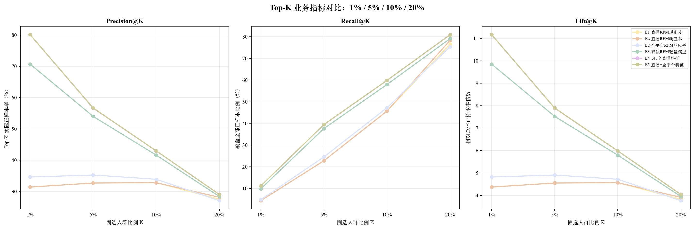
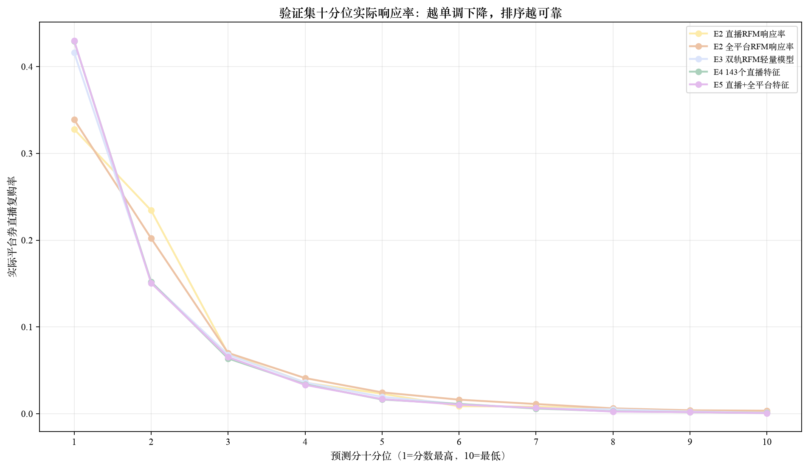
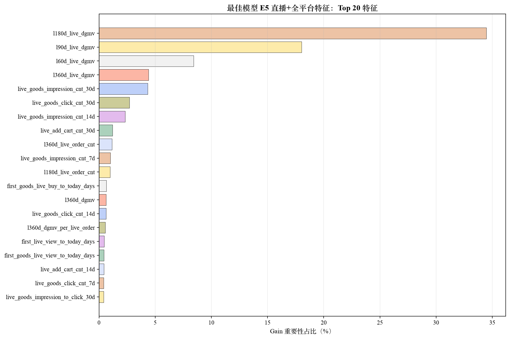

AP 为代码实际计算的 Average Precision；Top-K 指标统一展示 K=1%、5%、10%、20%。表格可横向滚动，最佳轮数属于训练细节，已下沉到 checkpoint metadata。
| 实验 | ROC-AUC | AP | Precision@1% | Precision@5% | Precision@10% | Precision@20% | Recall@1% | Recall@5% | Recall@10% | Recall@20% | Lift@1% | Lift@5% | Lift@10% | Lift@20% |
|---|---|---|---|---|---|---|---|---|---|---|---|---|---|---|
| E0 全局正样本率 | 0.5000 | 0.0718 | 6.56% | 6.74% | 6.99% | 6.97% | 0.91% | 4.70% | 9.74% | 19.43% | 0.91x | 0.94x | 0.97x | 0.97x |
| E1 直播RFM规则分 | 0.8742 | 0.2865 | 31.38% | 32.68% | 32.79% | 27.48% | 4.37% | 22.77% | 45.69% | 76.60% | 4.37x | 4.55x | 4.57x | 3.83x |
| E2 直播RFM响应率 | 0.8773 | 0.2936 | 31.38% | 32.68% | 32.79% | 28.11% | 4.37% | 22.77% | 45.69% | 78.33% | 4.37x | 4.55x | 4.57x | 3.92x |
| E2 全平台RFM响应率 | 0.8652 | 0.2925 | 34.61% | 35.24% | 33.89% | 27.05% | 4.82% | 24.55% | 47.22% | 75.38% | 4.82x | 4.91x | 4.72x | 3.77x |
| E3 双轨RFM轻量模型 | 0.8988 | 0.4611 | 70.70% | 53.99% | 41.60% | 28.39% | 9.86% | 37.62% | 57.97% | 79.12% | 9.85x | 7.52x | 5.80x | 3.96x |
| E4 143个直播特征 | 0.9076 | 0.5051 | 80.13% | 56.61% | 42.93% | 29.06% | 11.17% | 39.45% | 59.83% | 80.98% | 11.17x | 7.89x | 5.98x | 4.05x |
| E5 直播+全平台特征 | 0.9080 | 0.5065 | 80.13% | 56.67% | 42.97% | 29.01% | 11.17% | 39.49% | 59.88% | 80.86% | 11.17x | 7.90x | 5.99x | 4.04x |


E0～E2：RFM Baseline
↓
E3：RFM + LightGBM，效果明显提升
↓
E4：加入完整直播特征，再次明显提升
↓
E5：加入全平台特征，小幅继续提升
重点看十分位曲线是否从第 1 档到第 10 档整体下降。第 1 档代表模型认为最可能用平台券直播复购的人群。

重要性表示模型使用频率和信息增益，不等于因果关系。

图中同时展示 Train/Validation 人群占比漂移和各生命周期的平台券直播复购率。
直播和全平台生命周期定义不同，上下两行分别解释，不能将两套分群作一一对应比较。

/Users/yukewei/Public/xhs/券敏感人群第一阶段/checkpoints/20260825_162323/E5_live_plus_platform.txt/Users/yukewei/Public/xhs/券敏感人群第一阶段/checkpoints/20260825_162323/E5_live_plus_platform_preprocessor.pkl/Users/yukewei/Public/xhs/券敏感人群第一阶段/checkpoints/20260825_162323/E5_live_plus_platform_metadata.json注意：部署或批量预测时，权重和预处理器必须配套使用，不能只拿模型 txt。
validation_metrics.csv：核对完整指标。validation_*_deciles.csv：排查十分位曲线细节。*_feature_importance.csv：查看全部特征重要性。data_summary.csv、user_overlap.csv：检查数据量、正样本率和用户重合。rfm_rules_and_quality.json：核对冻结的 RFM 阈值与异常人群。